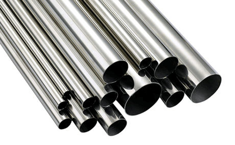

Stainless steel tube is typically specified as OD (outside diameter) and WT (wall thickness) and mechanical properties of the base stainless steel material. It is resistant to many forms of corrosion, has hygienic sterile properties, high quality aesthetic appeal and exceptional strength. Tube is manufactured in round, square and rectangular sections in a variety of wall thicknesses, usually by longitudinal welding, hot and cold drawing (seamless), or spiral welding.
Finishes or appearance range from unpolished to highly polished. Unpolished has a 2B mill finish, standard polished is a finely grit polished finish, and there is a finer buffed finish giving a close to mirror appearance. Finishes are selected to suit application and aesthetic appeal.
Stainless steel tube can be joined by welding, which facilitates rigidity in construction, or by the use of mechanical fittings which enables dismantling for hygienic cleaning. Tube is usually annealed if extensive forming and bending is required, such as for bending or expanding. The tubular products system incorporates a comprehensive range of stainless steel fittings — elbows, tees, reducers and clamps — in various sizes, wall thicknesses, grades and finishes to suit tube dimensions and tolerances.
Produced direct off the continuous tube welding mill, using cold rolled stainless steel strip made to ASTM standards, with tube produced to commercial limits of straightness in standard or specific customer lengths. AW tube has a higher yield point than annealed tube and is generally used for decorative applications or in mildly corrosive conditions. Not suitable for applications requiring significant flaring, expanding or bending.
Spec: ASTM A554At the point of manufacture this tube goes through a process where the internal weld bead is rolled, improving the internal finish along the weld and reducing the chance of a crevice where liquid or food product may be trapped. Assists with 'clean in place' (CIP) environments in food and beverage process lines or other applications such as pharmaceuticals.
Spec: ASTM 1528Produced by the same process as AW tube but annealed to relieve stresses and improve ductility. Bright annealing is carried out in a controlled-atmosphere furnace, so no oxide or scale forms on the surface. Annealing increases corrosion resistance and softens the tube, allowing severe manipulation such as bending, expanding and forming.
Spec: ASTM A269Typically destined for heat exchanger applications, produced similarly to AWA product except the internal bead is rolled flush with the inside tube surface prior to annealing.
Spec: ASTM A249MProduced by drawing through a hardened steel or tungsten carbide die at room temperature, to reduce the OD or wall (or both), produce a smooth surface finish, and break up the weld structure — resulting in recrystallisation when annealed. Cold drawing achieves fine dimensional tolerances with excellent uniformity of wall thickness, concentricity, grain structure and hardness.
Spec: ASTM A249MProduced by drawing from hollow billets, usually supplied in the annealed and pickled condition. Used where service conditions involve high pressure and corrosive conditions and where good surface finish and close tolerances are required — e.g. heat exchanger and condenser tubing, instrumentation tubing, and some refinery applications.
Spec: ASTM A269 for general service, ASTM A213M for heat exchanger serviceThe range of stainless steel tubular product stocked by Murtaza Corporation includes tube and fittings for: